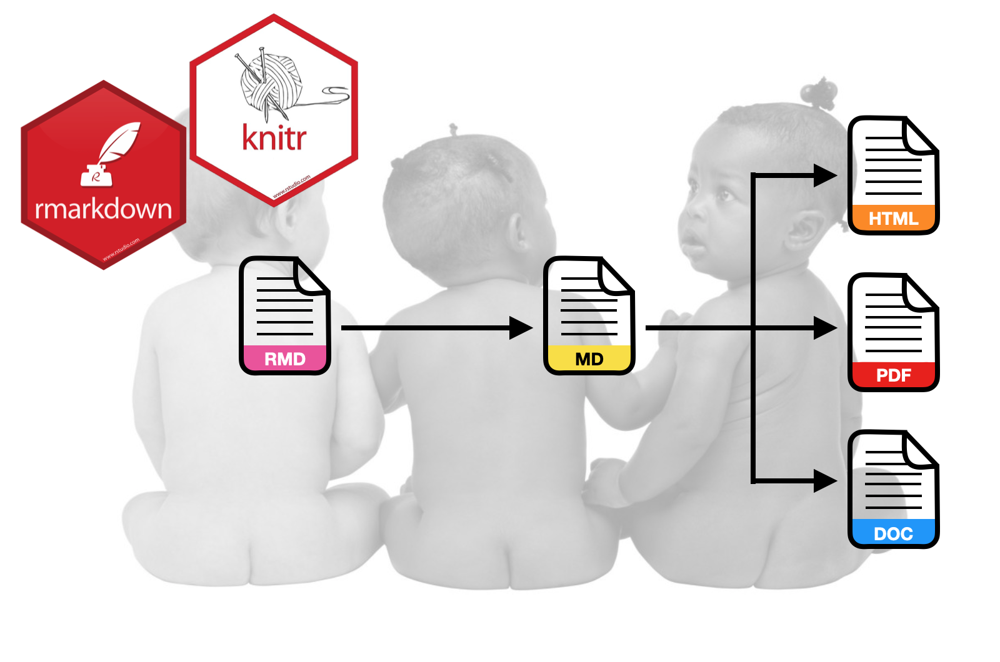

Assignment 01
INTRODUCTION TO QUARTO
The goal of this assignment is to give you experience using Quarto to integrate analysis and documentation. In this assignment, you will use the data from the file fertility.csv to explain variation in infant mortality rates.
Instructions
Create a QMD document to respond to each of the questions below. Please adhere to the following guidelines for further formatting your assignment:
- All graphics should be resized so that they do not take up more room than necessary and should have an appropriate caption. Learn how to do this in a code chunk using knitr syntax.
- Any typed mathematics (equations, matrices, vectors, etc.) should be appropriately typeset within the document using Markdown’s equation typesetting. See here for some examples of how mathematics can be typeset in R Markdown.
- All syntax should be hidden (i.e., not displayed) unless specifically asked for.
- Any messages or warnings produced (e.g., from loading packages) should also be hidden.
For each question, specify the question number (e.g., Question 2) using a level-2 (or smaller) header. This assignment is worth 15 points.
Questions
Import the data and display the first several rows of data (not all of it). Use one of the paged table options in your YAML to ensure that this is printed nicely. All syntax for these commands should be hidden.
Recode the
gni_classvariable by creating a dummy variable calledhigh_gni. To create this dummy variable use the syntax below. Explain in words (not code) how thehigh_gnidummy variable is being coded.
fertility = fertility |>
mutate(
high_gni = if_else(gni_class == "Upper/Middle" | gni_class == "Upper", 1, 0)
)Create a well-formatted table that includes the mean infant mortality rate and the standard deviation of infant mortality rates for each of the two High GNI levels represented in the data. Display these in a summary table. All numerical output should be rounded to two decimal places. Also add an appropriate caption (the caption does not have to follow APA formatting). Do not display any syntax.
Use the
lm()function to fit a main effects linear model (unstandardized) regressing infant mortality on your dummy variable and female education level. Use thetidy()function from the broom package to display the model’s coefficient-level output. (Reminder: Do not display any syntax, only the model’s coefficient-level output.)Use a bulleted list to provide an interpretation of each estimated regression coefficient (including the intercept) from the regression you fitted in Question 3; one interpretation per list item.
Create a well-formatted table of the model’s coefficient
tidy()output (e.g., using thegt()function from the{gt}package). In the final outputted table, the five column names should be “Predictor”, “B”, “SE”, “t”, and “p”, respectively. (The last four column names should be italicized since they are statistics.) All numerical output should be rounded to two decimal places, except the p-values, which should be rounded to three decimal places. Also add a caption. (2pts.)Create a publication quality plot that displays the results from the fitted model. For this plot, put the female education level predictor on the x-axis. Display separate lines to show the effects for each level of the dummy-coded GNI variable. The two lines should be displayed using different linetypes or colors (or both) so that they can be easily differentiated in the plot. Be sure that the figure includes a caption using the
fig-capoption in the code chunk. The plot should be centered on the page. Adjust the aspect ratio of the plot usingfig-widthandfig-heightin the code chunk so that it looks good. Lastly, change the values of the output width/height (out-width,out-height) to change the size of the plot from the default values. (2pts.)Use a display equation to write the equation for the underlying regression model (including error and assumptions) using Greek letters, subscripts, and variable names. Also write the equation for the fitted least squares regression equation based on the output from
lm(). Type these two equations in the same display equation, each on a separate line of text in your document, and align the equals signs. (2pts.)Write the following sentence: “The estimated partial regression coefficient (\(\hat\beta_\mathrm{Female~Education}\)) is \(x\).” In this sentence, use an inline code chunk to replace \(x\) with the value for the fitted coefficient from the fitted equation. In this code chunk, do not just write in the value for the coefficient, but use syntax to extract the value from the
tidy()output. (Hint: Google “R extract element from dataframe”.) (2pts.)Compute the sum of squared residuals for the fitted regression. Although you can use the
anova()function to check your work, compute this value by actually using R syntax to carry out the computation, \(\sum(y_i - \hat{y}_i)^2\). Show the syntax you used in your document.Write a sentence that includes two references in an inline citation. This should also generate the actual references when you knit your document. One of the two references should be the Fox textbook. The other should be a journal article of your choice. You can choose the topic of the sentence and how the two references are used in the citation. (Note the references do not actually have to pertain to what is written in the sentence. This is just an exercise in using the bibliography tools in Markdown.) Specify an appropriate CSL file so that the references and citations are in APA format. (If you want to use a citation style that is different from APA, say for a specific journal, use the appropriate CSL file, and indicate that on the assignment.) Both the BIB and CSL files should be included in your project’s
assetsdirectory. (2pts.)
What to Submit
You need to submit a zipped version of your entire assignment-01 project directory. When the TA unzips this and opens your R project file they will render your QMD document. This should produce the HTML file that will be graded. (You can include your HTML file as an extra attachment if you want, but the QMD document will need to render. If it doesn’t render the TA will return it to you to try again.)